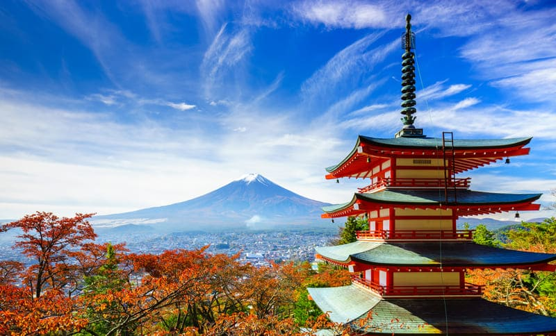

Tokyo, Japão
As paisagens de Tóquio combinam o vibrante cenário urbano de arranha-céus e neons com a beleza de templos históricos, jardins tradicionais, como o Shinjuku Gyoen, e até mesmo paisagens naturais nas montanhas, parques e ilhas vulcânicas, que oferecem um contraste marcante com a metrópole. A cidade também apresenta uma mistura de tradição e inovação, com o Rio Sumida e a área de Kiyosumi Shirakawa oferecendo cenários aquáticos que refletem a cultura local.
- Arranha-céus e luzes: A imagem icónica de Tóquio inclui arranha-céus imponentes, como o Tokyo Skytree e a Tokyo Tower, que oferecem vistas panorâmicas incríveis da cidade.
- Bairros vibrantes: Bairros como Kabukicho e Harajuku exibem um ambiente de luzes intensas, informação visual e uma atmosfera de subcultura vibrante.
- Jardins tradicionais: Lugares como o Shinjuku Gyoen National Garden oferecem um refúgio de paz com belas árvores e flores cuidadas. O Kagurazaka é outro ponto com um jardim histórico, o Koishikawa Korakuen.
- Montanhas e o interior: A região de Tóquio também abriga destinos como o Monte Mitake e o Monte Takao, ideais para caminhadas e que oferecem uma visão mais tranquila da natureza.
- TIlhas vulcânicas: As Ilhas Izu e Ogasawara, que são tecnicamente parte da área de Tóquio, apresentam paisagens vulcânicas e subtropicais, longe da agitação da cidade.
- Rio Sumida: Este rio atravessa o centro de Tóquio, desaguando na Baía de Tóquio, e oferece paisagens que refletem a atmosfera vibrante da capital.
- BKiyosumi Shirakawa: Este bairro é um exemplo de como a paisagem aquática se integra à identidade de Tóquio, com uma estética clara e pictórica que combina tradição e inovação.